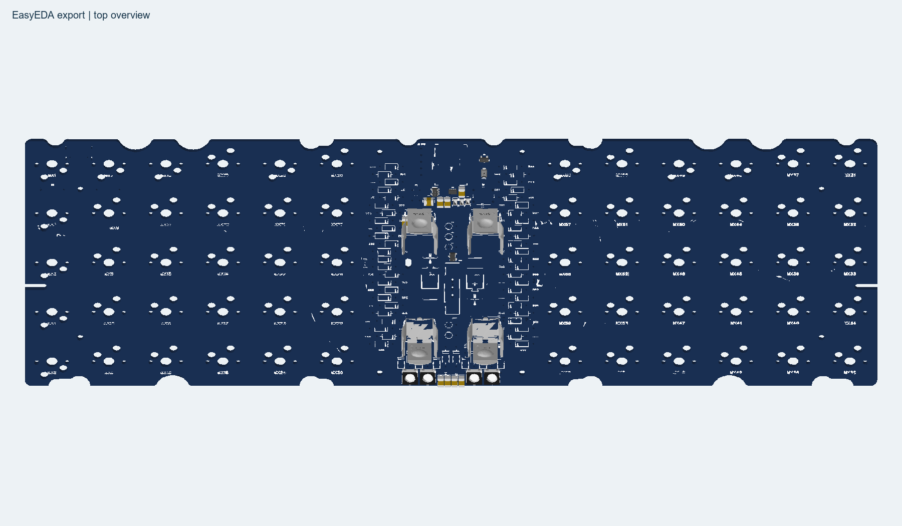
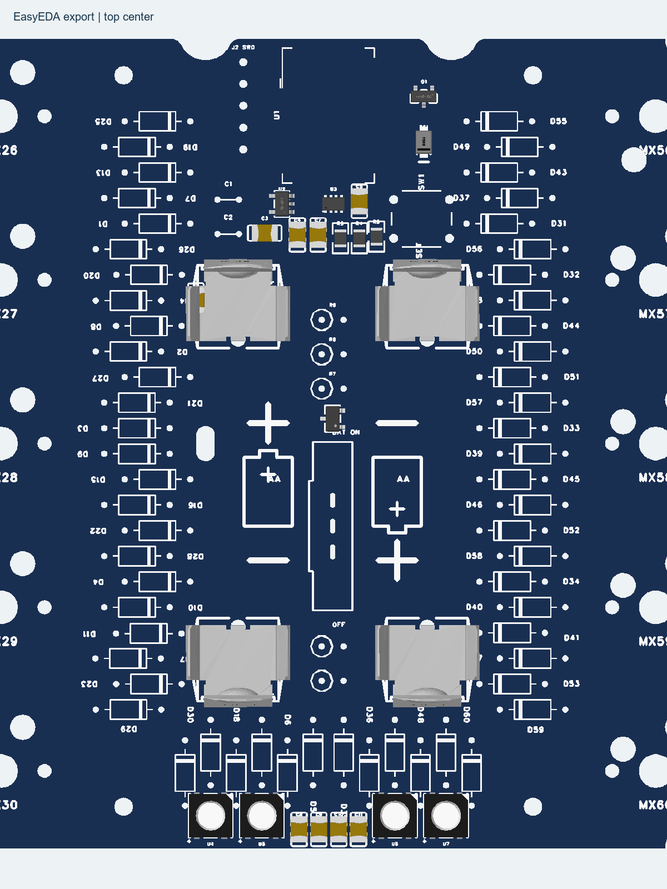
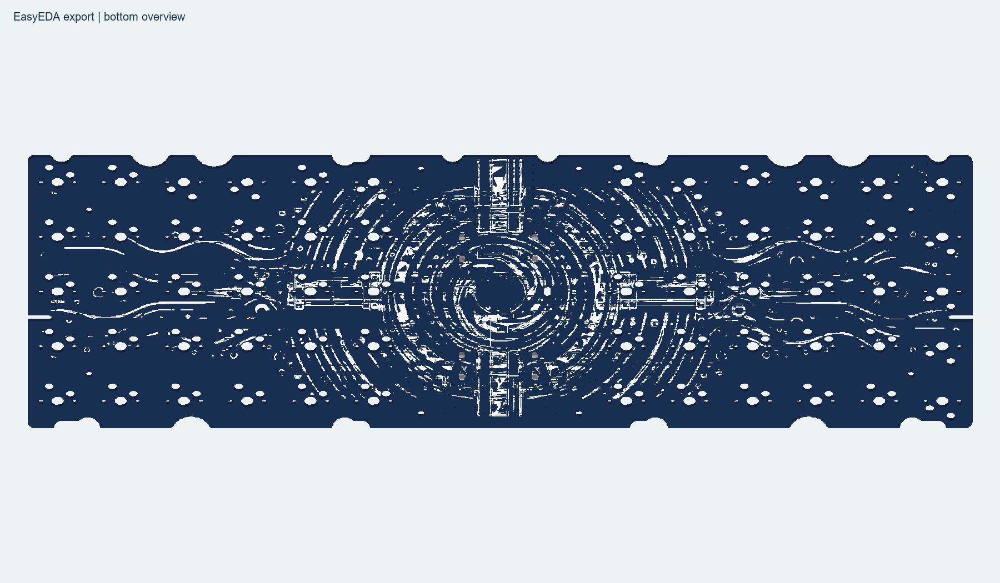
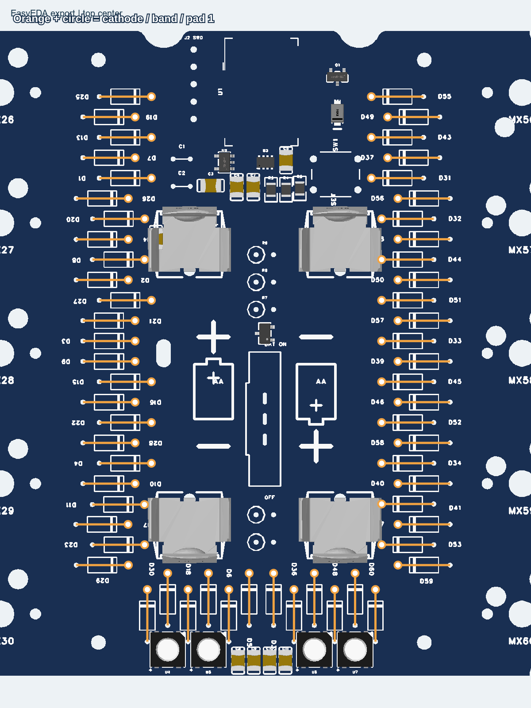
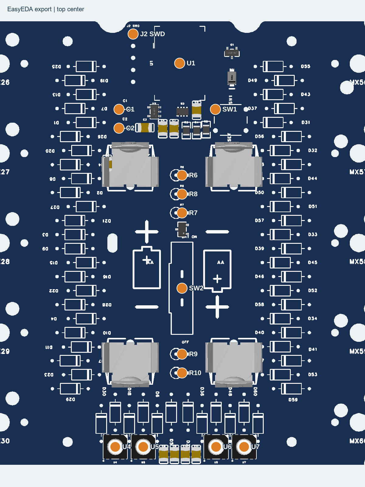
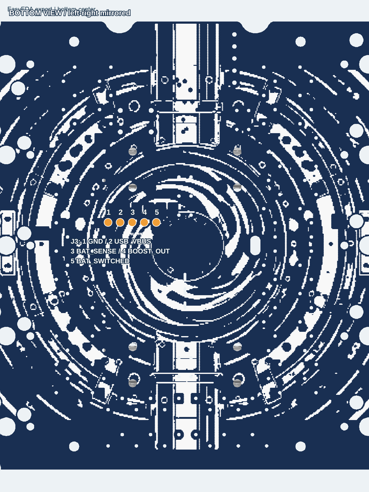
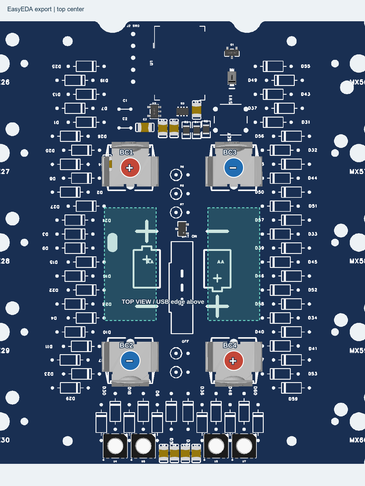

このガイドを使う基板
60キー・4灯ステータスアニメーション版は、実機でSWD書き込み・照合、Stokerjack用ブートローダーの修復、アプリ起動とUSB HID認識を確認済みです。これは本ガイド対象の次回THT hybrid基板について、全キー・全組立工程・機構適合を実機検証済みという意味ではありません。製造確定前の注意事項は引き続き有効です。
導通確認ツールは同じPC内で使うローカル専用ツールのため、ここでは配布していません。
Stokerjack-THT-hybrid-20261015.epro の60キー版が対象です。秋月の上操作スイッチSS-12F16G6を追加し、R6〜R10を縦型リード抵抗へ変更した設計です。写真で使っていた旧基板とは部品位置が異なります。


本文の静止3D図は完成予想図ではありません。U1、USB端子、ダイオード、ソケット、リード抵抗・C1/C2、スイッチ、Polarisなど、未登録モデルは表示されません。電池・キースイッチ・キャップ・ケースも省略しています。図中の空白は「未実装指定」ではありません。
この公開ガイドと配布UF2は60キー版が対象です。BOMには58キー版の列もありますが、60キー版の列を参照してください。本文の3D・極性補助図とプレートは60キー版を基準にしており、58キー版のキー配置・スタビライザー・機構適合を保証するものではありません。
部品を分けて、低いものから実装
現行BOMと別途購入品を照合します。PCBA済み21点に加えて、手実装は60キー版138点。キースイッチ・キーキャップ・電池はこの138点に含みません。
温調はんだごて、熱風リフロー設備、適合するはんだペースト、フラックス、はんだ、吸い取り線、ニッパー、ピンセット、テスター、拡大鏡、絶縁チューブ、基板保持具を用意します。初回書き込みにはST-LinkとSWD配線が必要です。
- PCBAの目視確認
- マイコン・USB端子のリフロー（片面ずつ）
- ダイオードと低いリード部品
- ソケット・Polaris
- スイッチ・電池端子
- 無通電検査 → USB確認 → ファームウェア → 電池確認
- プレート・キー・カバー・ケース
表面の小部品を確認


PCBAはすべて表面です。以下がそろっていることをBOMと照合します。
| 参照番号 | 担当 |
|---|---|
| U2・U3 | LDO・電源切替 |
| Q1・Q2 | LED電源・電池電源制御 |
| D61 | 電源ダイオード |
| R3〜R5 | 電源周辺抵抗 |
| C3〜C11 | 電源・LED周辺コンデンサ |
| U4〜U7 | 4灯のRGB LED |
浮いた端子、隣接ピンのはんだブリッジ、部品欠落を拡大して確認します。U3などの小さなパッケージを無理にこてで再実装せず、難しい箇所はPCBAに任せる構成です。
マイコンとUSB端子をリフロー


J1：USB-C / TYPE-C-31-M-12
USB端子は裏面。基板端へ口を向け、シルクとパッドに合わせて固定します。ランドにペーストを塗布し、ピンセットで位置を合わせてリフローします。シェルの固定足は接合を確認し、必要に応じてこてで仕上げます。拡大してピン間ブリッジを確認。CC1/CC2用のR1/R2も両方必要です。
U1：MDBT50Q-1MV2
表面中央上端に実装します。モジュールのアンテナ側を基板の上端へ向け、ランドに正確に合わせます。ペーストを塗布し、端子列のズレを対向する角で確認してからリフローします。冷却してから接合と隣接端子の短絡を検査します。U1とJ1は別々の面なので、片面ずつ保持して作業します。加熱条件は各部品とペーストの指定に合わせ、周囲の樹脂部品を保護します。冷えるまで部品を動かさないでください。
1N4148を60本。帯側を毎回確認
D1〜D60は表面から挿し、裏面ではんだ付けします。リード間隔は7.62mm。ガラス本体に力を掛けず、足を曲げて数本ずつ固定します。
黒い帯がカソード（K）。図のオレンジ線端の白丸がパッド1＝帯側です。中央の左右で向きが変わるため、全部を同じ方向にそろえません。下側の縦配置も個別に確認します。
- シルクの帯表示と補助図のパッド1を合わせる。
- 片足を仮止めして位置を確認。
- もう片足をはんだ付けし、余ったリードを切る。
- 隣の部品・電池端子へ切断面が触れないことを確認。
ダイオードモードは、はんだ前の単体部品で向きを確かめると分かりやすくなります。実装後の測定は周囲の回路によって読み値が変わります。


抵抗とマイコン用コンデンサ


| 部品 | 値・条件 |
|---|---|
| R1・R2 | 5.1kΩ、USB CC抵抗。P7.62mm |
| R6・R8 | 100Ω、1%、1/4W |
| R7・R9 | 100kΩ、1%、1/4W |
| R10 | 1kΩ、1%、1/4W |
| C1 | 4.7µF、SYS_VDD–GND、P2.5mm |
| C2 | 1µF、USB_VBUS–GND、P2.5mm |
R6〜R10は縦実装です。本体直径2.5mm以下・長さ6.5mm以下、実装高さ8.5mm以下、足ピッチ2.54mm。折り返した裸リードに絶縁チューブを通し、電池金具に触れないようにします。
上からR6、R8、R7、電源スイッチ、R9、R10の順。値の取り違えを防ぐため、取り付け前にテスターで確認します。
C1/C2は具体的な購入品が未確定です。容量・耐圧・P2.5mm・実装高さを照合してください。無極性品なら向きはありません。有極性品を採用する場合はパッド1が＋、パッド2がGNDです。
Kailhソケットを裏面へ
MX1〜MX60：Kailh CPG151101S11
ソケットは裏面。各フットプリントの樹脂逃げ穴・パッド位置に合わせます。部品ごとの向きは3D表示と実パッド図で確認します。片側だけ固定して密着を確認し、反対側をはんだ付けします。スイッチを挿すときはソケットを裏から支え、接点に曲がった足を押し込まないようにします。
昇圧子基板は裏面へ直接はんだ


GeaconPolaris Batの組立済み子基板を使用します。ピンヘッダーは使わず、対応するパッド同士を直接はんだ付けします。
| J3番号 | 接続先 |
|---|---|
| 1 | GND |
| 2 | USB_VBUS |
| 3 | BAT_SENSE → マイコンADC |
| 4 | POLARIS_BOOST_OUT |
| 5 | BAT_SWITCHED（スイッチ後の電池入力） |
パッド番号とネット名で向きを照合し、1か所を仮止めして位置・浮き・他部品との接触を確認。その後、残りを接合します。左右を写真だけで判断せず、裏表を区別してください。
電池端子の突き出した足が子基板や部品に当たらないか確認します。不要な長さを切り、必要箇所を絶縁します。BAT_SENSEの接続も省略しません。
金具の間隔と電池の極性
SW1はRESET、SW2は秋月SS-12F16G6（115705）です。SW2は表面中央へ取り付け、上下から操作できる位置にそろえます。電池を入れる前に導通計で端子2–3がON、端子1–2がOFF側になることを確認。表示方向も実物スイッチの導通で照合します。


BC1〜BC4はMY-AA-07 / C2979180を4個。左右の電池中心間隔は22mmです。上下の金具がそれぞれ電池へ向かうように仮止めし、4個の向きを確認してから本付けします。
| 端子 | 位置・ネット |
|---|---|
| BC1 | 左上 / BAT_RAW / 電池＋ |
| BC2 | 左下 / BAT_MID / 電池− |
| BC3 | 右上 / GND / 電池− |
| BC4 | 右下 / BAT_MID / 電池＋ |
BC2–BC4は直列接続の中点なので、電気的に導通するのが正しい状態です。一方、BC1–BC3は電池全体の＋/−。ここが安定して約0.9Ωなどの低抵抗になる場合は通電せず、短絡を調べます。まずテスターのリード同士を当てた抵抗も確認してください。
抵抗値はコンデンサの充電や半導体の影響を受けます。「導通ブザーが一瞬鳴る」だけで合否を決めません。OFF状態の測定だけではスイッチ後の短絡を見落とすため、電池・USBを外したままON側も確認します。
USBと電池を段階的に確認
- すべてのはんだと切断したリードを拡大確認。BAT_RAW–GND、SYS_VDD–GND、USB_VBUS–GNDに持続する低抵抗短絡がないか調べます。
- 電池を抜いたままUSBを接続。USB_VBUSは約5V、SYS_VDDは約3.3Vが目安です。SWD J2の1番はSYS_VDD、4番はGNDです。5VをJ2の1番へ入れないでください。
- ファームウェアを書き込み、USBキー入力とLED表示を確認してからUSBを外します。
- 金具の接触がなく極性が正しいことを再確認し、NiMH単3を2本装着。可能なら最初は電流制限できる電源で電池系を確認します。
- SW2をONにしてBluetooth動作を確認。発熱・におい・異常があればすぐ切り離し、再通電せず原因を確認します。
SW2は電池側の電源を制御します。USB接続中はOFFでも動作し、NiMHをUSBから充電する機能はありません。電池は取り外して対応充電器で充電します。
初回はST-Link、通常更新はUF2
| J2 SWD | 信号 | 接続の考え方 |
|---|---|---|
| 1 | SYS_VDD（3.3V） | 対応ライターの電圧参照。ST-Linkの3.3V出力と同じとは限らない |
| 2 | SWDIO | ST-Link SWDIO |
| 3 | SWDCLK | ST-Link SWCLK |
| 4 | GND | ST-Link GND |
| 5 | RESET_N | 対応する場合はNRST。SWIMではない |
ST-Link互換機は端子配列が異なるため、本体表記と仕様で確認します。基板の給電元を一つにし、USB給電とライターの3.3V出力を安易に並列接続しません。
初回ブートローダー導入（既存設定を消去）
Stokerjack_bootloader_SWD.hexを使います。以下は今回の実機作業で使用したOpenOCD設定です。mass_eraseは既存アプリとペアリング設定を消去します。必要なら先にバックアップし、公開版ではHEXと設定ファイルを同じ作業フォルダーに保存し、そのフォルダーで実行します。
source [find interface/stlink.cfg] source [find target/nordic/nrf52.cfg] adapter speed 100 init reset halt nrf5 mass_erase program Stokerjack_bootloader_SWD.hex verify reset run shutdown
OpenOCDのバージョンによってtargetファイルの位置が異なります。設定ファイルを保存し、対応するOpenOCDで openocd -f install-stokerjack.cfg を実行。verify成功を確認します。ブートローダーが既に動作する基板では、この工程を繰り返す必要はありません。
通常の書き込み
- データ通信対応USBケーブルでPCへ接続。
- RESETを500ms以内に2回押す。
- 「STOKERJACK」ドライブが現れたら、60キー用アニメーション版UF2をコピー。
- 再起動後、USBキーボードとして認識することを確認。
58キー基板にはこの60キー用UF2を使わないでください。旧アドレス0開始SWDアプリを書き込むとブートローダーを上書きします。
4灯をテストする
60キー配列では、最下段の左から5番目または8番目を長押ししてFnに入り、下から2段目の右端（/キー）を押します。4灯が順に動き、接続状態・電池残量・レイヤー・Caps Lockを表示して、約2.4秒後に消灯します。初期化直後の残量未取得表示は異常とは限りません。
Bluetoothはホーム段左端のEscを長押しし、Q〜Tでプロファイル1〜5を選択。PC側でStokerjackをペアリングします。BTレイヤーのTABは現在の接続情報消去、Yは全消去なので、初回確認中は誤押しに注意します。
プレート、キー、カバーを取り付ける
更新：プレートと電池カバーはアクリル加工セットへ。DXF・設計指図書一式。プレート1.5mm・14.00mm角開口、カバー3mm。まず同梱試験片で嵌合を確認します。
- 電池・USBを外し、プレートのダイオード・端子・ねじ頭との干渉を確認。
- スイッチの足がまっすぐか確認して、プレートとソケットへ取り付ける。
- 全キーを入力テストし、動かないキーはスイッチ足・ソケット・ダイオードを確認。
- キーキャップとケースを取り付ける。アンテナ周辺を金属で覆わない。
- 必要に応じてアクリル天板を取り付ける。現行DXFは3mm厚・4本ねじ固定、20mmスペーサーは仮寸法。電池や端子を押さえつけない高さを実測する。
電池交換しやすい磁石式カバーは検討段階です。このガイドと同梱DXFには、磁石固定構造は含みません。
組み立て確認表
チェック状態はこのブラウザにのみ保存します。実物の合否を自動判定するものではありません。